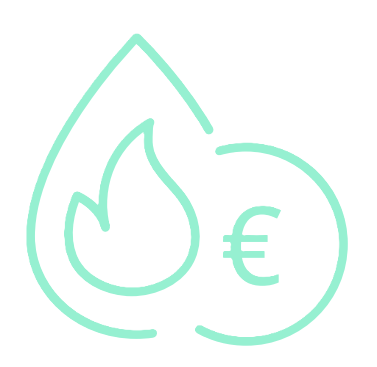

Service Public Fédéral FINANCES
Federal Public Service FINANCE
Santé publique, Sécurité de la Chaîne alimentaire, Environnement
Public Health, Food Chain Safety, Environment
CLIMATECHANGE.BE | .be
Les mesures de soutien mondial aux énergies fossiles restent considérables, et ce malgré les objectifs de neutralité climatique à long terme de la plupart des grands pays et le fait que le déploiement des énergies renouvelables et des économies d'énergie soient plébiscités. En 2023, le coût budgétaire du soutien public aux combustibles fossiles s'élevait selon l'OCDE à 1,1 billion USD. Malgré une baisse de près d'un tiers par rapport à l'année record de 2022, cela signifie que le soutien des gouvernements aux combustibles fossiles reste nettement plus élevé qu'au cours de la dernière décennie.1 Global support measures for fossil fuels remain substantial, despite the long-term climate neutrality goals of most major countries and the push for renewable energy deployment and energy savings. In 2023, the budgetary cost of public support for fossil fuels amounted to USD 1.1 trillion according to the OECD. Despite a drop of nearly a third compared to the record year of 2022, this means that government support for fossil fuels remains significantly higher than over the past decade.1
Parmi les Etats européens ayant annoncé des engagements de phasing out des subsides aux énergies fossiles, très peu d'entre eux avaient développé des plans spécifiques ou des feuilles de route à cet effet en 20212. En outre, la crise énergétique de 2021-2022 a été propice à la mise en place rapide de mesures de soutien, pour la plupart temporaires, visant à contenir la hausse des prix de l'énergie, y compris des énergies fossiles. Cependant, la crise énergétique met clairement en évidence la nécessité de réduire les consommations énergétiques et d'accélérer la transition vers des sources d'énergie renouvelables. Dans ce sens, la crise incite à renforcer les comportements et les politiques visant à diminuer la consommation des énergies fossiles. Among the European states that announced commitments to phase out fossil fuel subsidies, very few had developed specific plans or roadmaps for this purpose in 20212. Furthermore, the 2021-2022 energy crisis led to the rapid implementation of support measures, mostly temporary, aimed at containing the rise in energy prices, including fossil fuels. However, the energy crisis clearly highlights the need to reduce energy consumption and accelerate the transition to renewable energy sources. In this sense, the crisis encourages strengthening behaviors and policies aimed at reducing fossil fuel consumption.
Ce quatrième rapport intègre une évaluation systématique des subsides aux énergies fossiles jusqu'à et y compris 2022 et vise donc une mise à jour des inventaires précédents. Il s'avère particulièrement important de mettre régulièrement à jour un inventaire des mesures fédérales de soutien aux énergies fossiles, vu l'évolution des données d'une année à l'autre d'une part et les changements législatifs de certaines mesures d'autre part. This fourth report includes a systematic assessment of fossil fuel subsidies up to and including 2022, thereby aiming to update previous inventories. It is particularly important to regularly update an inventory of federal support measures for fossil fuels, given the evolution of data from year to year on the one hand, and legislative changes to certain measures on the other.
1 OECD, 2024, Inventory of support measures for fossil fuels, OECD Publishing, Paris
2 European Commission (2021), Directorate-General for Energy, Lee, L., Rademaekers, K., Bovy, P., et al., Study on energy subsidies and other government interventions in the European Union: final report, Publications Office, 2021
Le choix opéré dans cet Inventaire est celui d'une approche qui combine l'approche 'bottom-up' de l'OCDE et l'approche de l'OMC. Une autre approche possible était celle du « price-gap », développée notamment par le FMI. Cette approche n'a pas été retenue ici car elle ne recense pas directement les subventions et ses résultats sont trop dépendants des hypothèses émises sur les coûts de production et sur les coûts externes. The choice made in this Inventory is an approach that combines the OECD's 'bottom-up' approach and the WTO approach. Another possible approach was the "price-gap" developed notably by the IMF. This approach was not retained here because it does not directly identify subsidies and its results are too dependent on assumptions made regarding production and external costs.
Une distinction est également opérée entre les subventions directes, qui s'appliquent à la consommation d'énergie fossile, et les subventions indirectes qui s'appliquent à la production de services ayant un large recours aux énergies fossiles. Suite à l'évolution de la classification européenne et à l'introduction d'un nouveau rapportage relatif aux Environmentally Harmful Subsidies, le régime fiscal des voitures de sociétés est désormais repris en tant que subside préjudiciable à l'environnement et non plus en tant que subside indirect aux énergies fossiles. A distinction is also made between direct subsidies, which apply to fossil fuel consumption, and indirect subsidies, which apply to the production of services that rely heavily on fossil fuels. Following the evolution of European classification and the introduction of new reporting on Environmentally Harmful Subsidies (EHS), the tax regime for company cars is now classified as an environmentally harmful subsidy rather than an indirect fossil fuel subsidy.

Ce rapport vise à être autant que possible exhaustif pour les subventions directes. Pour les subventions indirectes, nous n'avons pu être exhaustifs et le choix des cas traités ne doit pas être interprété comme un ordre de priorité. This report aims to be as comprehensive as possible regarding direct subsidies. For indirect subsidies, we could not be exhaustive, and the choice of cases examined should not be interpreted as an order of priority.
| Produit Product | Benchmark 1 | Benchmark 2 |
|---|---|---|
| CarburantsMotor Fuels | ||
| Essence sans plombUnleaded petrol | 0,0 | 0,0 |
| Gasoil haute teneur en soufreHigh-sulphur gasoil | 0,1 | 0,1 |
| Gasoil faible teneur en soufreLow-sulphur gasoil | 382,4 | 382,4 |
| Total carburantsTotal motor fuels | 382,5 | 382,5 |